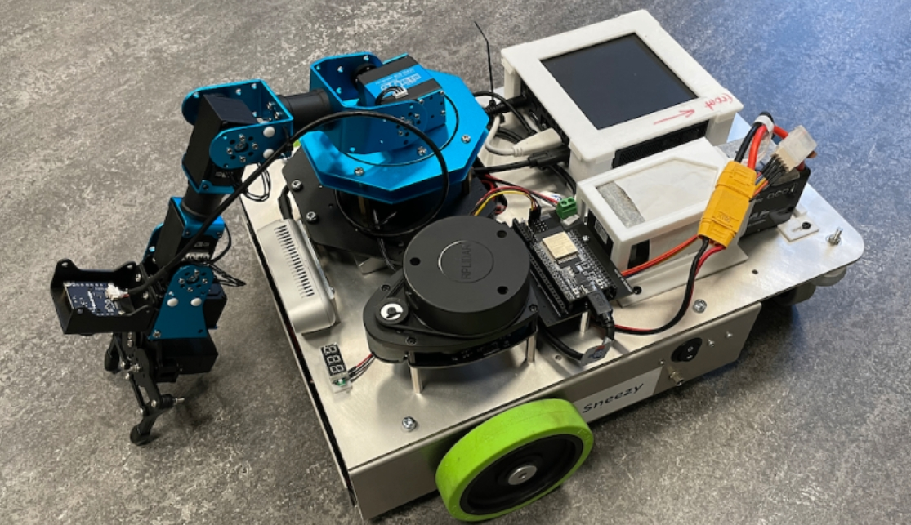
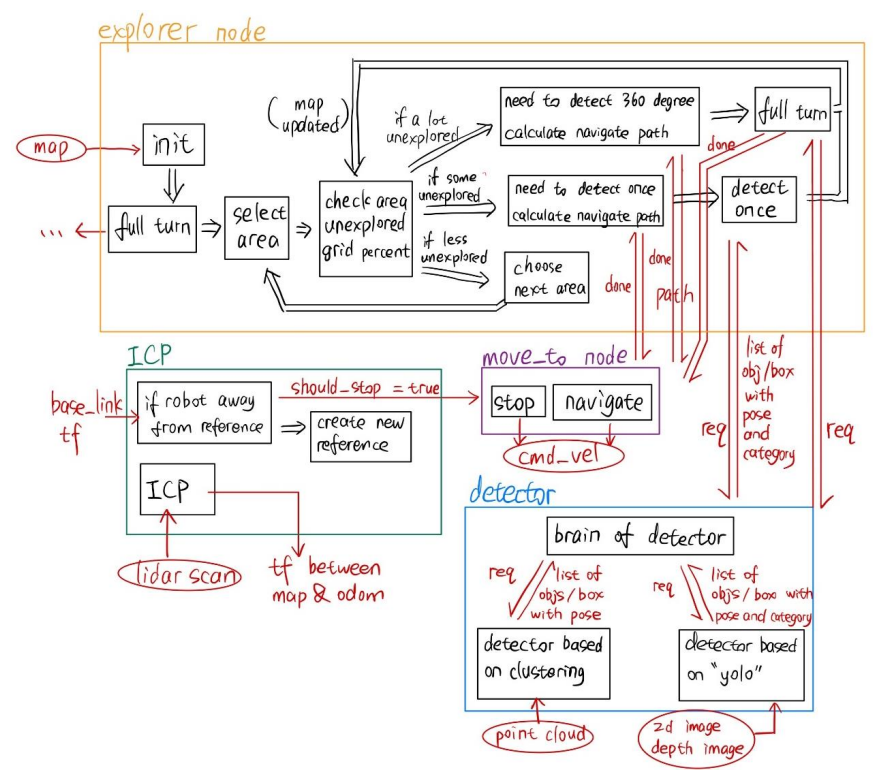
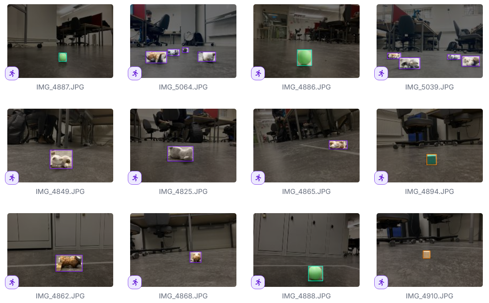

This was the robotics project course DD2419 that I took as an elective at KTH. The course required students to work in groups of four and, over half a year, develop a two-wheeled single-arm mobile robot. The task required the robot to autonomously explore an unknown space, record the objects it explored (position, category) and the boxes, then move next to each object, pick each one up in turn with the robotic arm and deliver it to a box. Throughout development, existing mature code libraries, such as SLAM libraries, were not allowed, but as an exception, deploying object classification models such as YOLO was permitted. This design was meant to make students familiar with the concepts learned in class, such as building occupancy grid maps and the notion of odometry.
The robot we used was assembled by the teaching team themselves. It has two wheels with encoders, a robotic arm, a front-facing RGBD camera, a 2D lidar and an IMU unit, plus a control board and an Ubuntu computer (with a GPU) running the ROS2 system. During development we usually SSH into the Ubuntu machine on the robot to program and run programs.

System Design
For chassis localization we use odometry built from wheel encoders and the IMU, and also use lidar ICP to correct the drift between map and odometry. ICP takes the first lidar frame after power-on as the reference frame and compares every subsequent frame against it to compute a transform; once the robot gets too far from the reference position, it first stops and then builds a new reference frame, suppressing error accumulation. The robot maintains several occupancy grid maps internally, separately recording the areas the camera has observed, the obstacles the lidar is detecting in real time, and previously detected objects and boxes, which are used to decide the next exploration direction, plan paths, and verify whether the path about to be driven has been confirmed by the camera. If a cell on the path has not yet been confirmed, the system truncates the path at the last verified point and continues driving after additional verification, which compensates for the possibility that the lidar (scanning a plane at a fixed height) misses low or overhanging obstacles. In the exploration phase, the robot first does one 360-degree scan at the origin, and then advances through the loop of "pick the nearest unexplored area → judge from the unexplored proportion whether to do a full-circle scan or plan a directional sector scan (candidate poses are chosen by the unexplored area they can see) → plan a path with A* on the configuration-space grid map → rotate to scan on arrival and update the map", until the whole map has been explored. Along the way, the robot uses the lidar to check for obstacles ahead as it moves, and stops if blocked.

The object collection phase is a simple state machine that loops among "go to object / grasp / go to box / place". Before and after each grasp or placement the robot first backs off beyond a safe distance, because the system treats every object and box as an obstacle that blocks navigation. Objects and boxes are recognized via two paths, point cloud clustering and YOLO, which my detection service integrates into results with category and coordinates and returns; on the arm's side, inverse kinematics brings the gripper to the target position, and then a suitable grasp angle and placement position are estimated.
Visual Detection Module
This was a four-person group project, and I was mainly responsible for the visual detection service for objects and boxes. I first used the point cloud data from the front RGBD camera to find objects: I voxel-downsampled the point cloud, removed the ground and ran DBSCAN clustering, which gave the approximate positions of objects and boxes. Then I built a dataset of 300 images taken by the robot to train YOLO for object localization and classification. The YOLO detections are mapped onto the clustering results, so as to assign object categories (ball, cube, plush toy, etc.) to the clusters and to suppress YOLO false positives. Box positions are harder to detect, because a box seen from above is a cuboid with long and short edges, so its placement angle needs to be computed; moreover, only one or two sides facing the robot can be seen, so its center position has to be estimated. I took the point cloud of the side faces and used RANSAC to estimate the face center and normal vector of a side, from which I computed the box center position and orientation angle.

The computed results are placed into the map data and assigned a unique ID. If an object of the same category is detected twice at the same position, only the old object's position is updated (deduplication), and the YOLO confidence of each single detection is also taken into account to adjust the weight for changes in the object's category. I also published the detection results as visualization markers in RViz to make debugging easier.
Reflection: Project Management
All four of us were beginners with no project development experience, so we suffered quite a bit in development. First, on division of labor and cooperation: we worked in a four-way parallel workflow, with everyone developing their own modules first and then trying to piece them together. The problem was that we hadn't specified in advance how to integrate them, so it was easy to end up with modules that each ran fine alone but broke when combined. For example, the visual detection module I built worked well on single static images, but when called while moving, because of algorithm latency and camera shake, the object positions returned by the detection module did not always reflect the true positions of the objects, and there were many similar problems. To solve this, I think we could have elected a team leader responsible for coordinating everyone's development content and schedule, and specified module functions and interfaces in advance, which would have improved things a lot.
Then there is development practice. Since the whole project lasted half a year, it was impossible for us to be fully familiar with others' code, and we might also forget what we wrote ourselves. So I feel we should have required everyone to write documentation from the very start of the project, including the rough working principle of the part they are responsible for, its external interfaces, important internal functions and so on, as well as how to start the module and what common error messages mean. With such documentation, both maintaining one's own work and collaborating as a team would be far more orderly.
Reflection: Language and Fitting into the Team
Beyond the lessons in project management, these six months also gave me a deep understanding of the "softer" side of teamwork: language and cultural integration. This task was done from winter 2025 to early summer. In the half year before that I was attending classes and adapting to life here, and this was the first project that required me to communicate with non-Chinese people extensively over a long period, so team communication didn't go very smoothly at first. Simply put, the other three were all Swedes. At the beginning they all spoke English, and gradually got used to chatting among themselves in Swedish, though when we worked together they still spoke English. This caused me a lot of trouble, because in such an environment I couldn't understand their small talk and missed a lot of information. What saddened me more was that although they could speak English, they still ignored me and spoke Swedish when they gathered on their own. I never talked to them about this, because at the time I didn't know whether I should bring it up, so I held it in and finished the project smoothly (Yongze, you just have to bear it). In fact we became good friends; later we even invited each other to our dorms for dinner and had great conversations, and now we have all gone our separate ways.
Some time after the project ended I gradually came to understand them. For Swedes, Swedish as a mother tongue is much more efficient for communication than English, so naturally if they can speak Swedish they don't want to speak English, especially classmates from the countryside, who are relatively less international and whose English is also worse. I have also observed Chinese people huddling together and speaking Chinese, or Italians huddling together, and so on. This phenomenon is quite common, but I have always held, or tried to hold, to one principle: if there is even one person present who doesn't speak Chinese, I will converse in English, or at least restate in English after speaking Chinese, because I don't want them to go through the unpleasant thing I went through.
Race, ethnicity, nation and language are heavy issues, and not something individuals can control. When structural predicaments occur (for example, being distressed at not understanding Swedish because I ended up on a team with three Swedes), we often feel annoyed with nowhere to vent, but even then we should stay rational and try to communicate, without taking it out on individuals, because these structural problems came before any individual. I always say that we have the same soul: regardless of gender or age, regardless of country or race, we all have exactly the same soul, only dyed different colors by our environments. To be a kind person with universal love is to hold the same love for these identical souls.